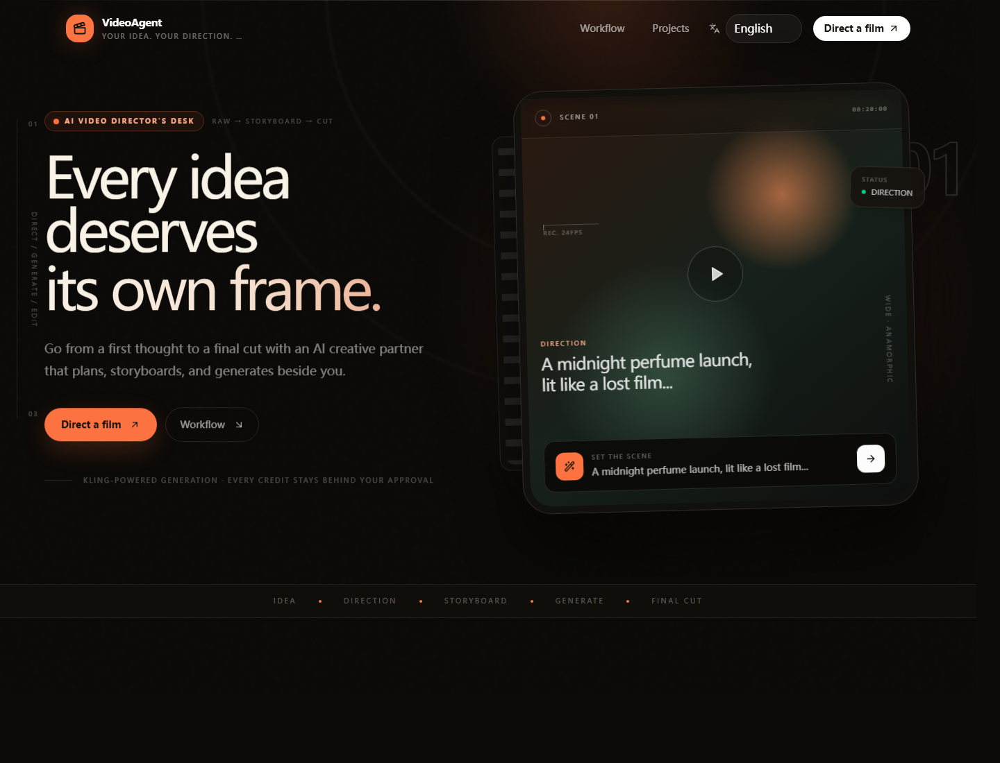

The story stays editable.
Plan the treatment, refine a shot, change the language, and approve generation without losing the thread.
Go from a first thought to a final cut with an AI creative partner that plans, storyboards, and generates beside you.
Every creative decision remains visible, editable, and under human control. The agent handles the production busywork.
LangGraph turns a brief into a structured, editable storyboard.
Kling MCP is abstracted behind a replaceable video-provider interface.
No billable generation is submitted without an explicit, traceable approval.
Plan the treatment, refine a shot, change the language, and approve generation without losing the thread.
Prompt, duration, aspect ratio, provider mode, and approval state remain inspectable.
The interface, agent responses, storyboards, and share pages use one shared localization system.
Typed contracts, persistent jobs, encrypted provider credentials, and a provider boundary keep the creative workflow independent from a single model.
